Solver Demos
Script for demoing the use of the VTS solvers within Matlab, to view the source code open the vts_solver_demo.m script file.
Contents
- Example ROfRhoAndFt
- Example ROfFxAndFt
- Example FluenceOfRhoAndZ
- Example FluenceOfRhoAndZAndFt
- Example PHDOfRhoAndZ
- Example FluenceOfRhoAndZTwoLayer
- Example PHDOfRhoAndZTwoLayer
- Example AbsorbedEnergyOfRhoAndZ
- Example ROfRho
- Example ROfRhoAndT
- Example ROfFxAndT
- Example ROfFx (single set of optical properties)
- Example ROfFx (multiple sets of optical properties)
- Example ROfFx (multiple optical properties, varying mua as a function of wavelength, mus' as intralipid scatterer)
- Example ROfFx (multiple optical properties, varying mua as a function of wavelength, mus' as mie scatterer)
- Example ROfFx
- Example ROfRho (multiple wavelengths, multiple rho)
- Example ROfRho (inverse solution for chromophore concentrations for multiple wavelengths, single rho)
- Example ROfRho for a two-layer tissue (multiple optical properties and rhos)
- Example ROfFx for a two-layer tissue (multiple optical properties and fxs)
- Example ROfRhoAndTime for a two-layer tissue (multiple optical properties and times)
- Example ROfRhoAndFt for a two-layer tissue (multiple optical properties and fts)
Example ROfRhoAndFt
Evaluate reflectance as a function of rho and temporal-frequency with one set of optical properites.

Example ROfFxAndFt
Evaluate reflectance as a function of spatial- and temporal- frequencies with one set of optical properites.

Example FluenceOfRhoAndZ
Evaluate fluence as a function of rho and z using optical properties from a list of chromophore absorbers with their concentrations and a power law scatterer for a range of wavelengths.

Example FluenceOfRhoAndZAndFt
Evaluate fluence as a function of rho and z using one set of optical properties and a distributed gaussian source SDA solver type.


Example PHDOfRhoAndZ
Evaluate Photon Hitting Density in cylindrical coordinates using one set of optical properties and a distributed gaussian source SDA solver type.

Example FluenceOfRhoAndZTwoLayer
Evaluate fluence in cylindrical coordinates for a two layer tissue with specified source-detector separation and top layer thickness using two sets of optical properties.

Example PHDOfRhoAndZTwoLayer
Evaluate Photon Hitting Density in cylindrical coordinates for a two layer tissue with specified source-detector separation and top layer thickness using two sets of optical properties.

Example AbsorbedEnergyOfRhoAndZ
Evaluate Absorbed Energy of rho and z using one set of optical properties and a point source SDA solver type.

Example ROfRho
Evaluate reflectance as a function of rho with three sets of optical properites.

Example ROfRhoAndT
Evaluate reflectance of rho and t at one s-d separation and two sets of optical properites.

Example ROfFxAndT
Evaluate reflectance as a function of spacial-frequency and t using one set of optical properites.


Example ROfFx (single set of optical properties)
Evaluate reflectance as a function of spacial-frequency with a single set of optical properties.

Example ROfFx (multiple sets of optical properties)
Evaluate reflectance as a function of spacial-frequency with multiple sets of optical properties, varying mua linearly.

Example ROfFx (multiple optical properties, varying mua as a function of wavelength, mus' as intralipid scatterer)
Evaluate reflectance as a function of spacial-frequency with multiple sets of optical properties, varying mua as a function of wavelength.
 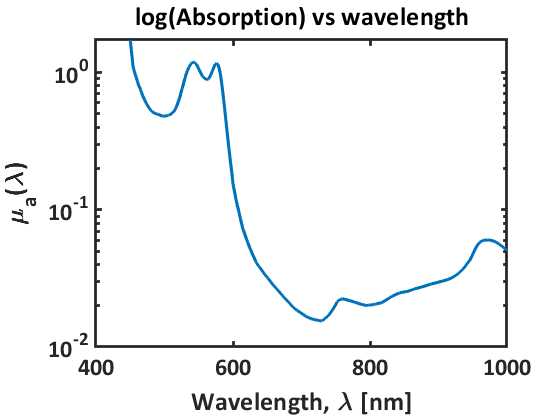 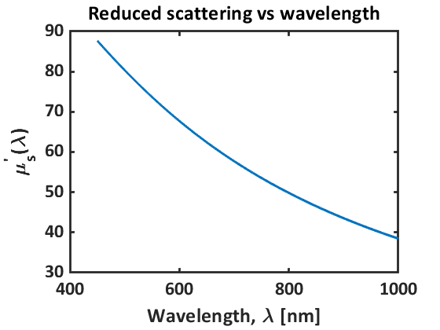 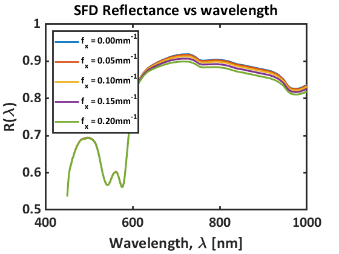
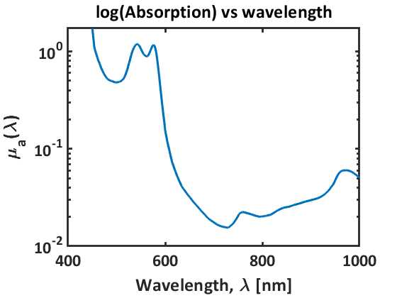 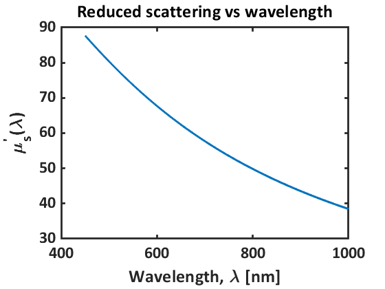 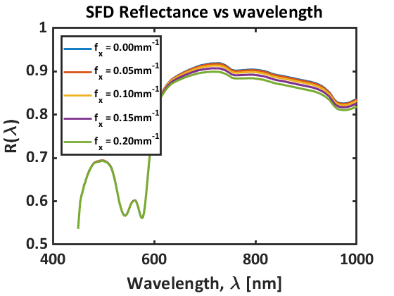 Example ROfFx (multiple optical properties, varying mua as a function of wavelength, mus' as mie scatterer)
Evaluate reflectance as a function of spacial-frequency with multiple sets of optical properties, varying mua as a function of wavelength.
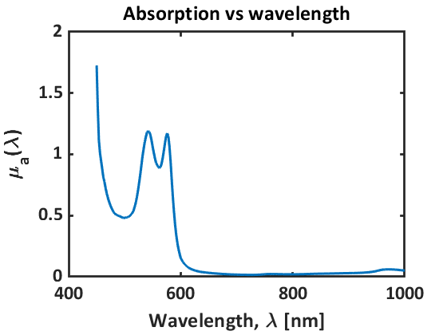 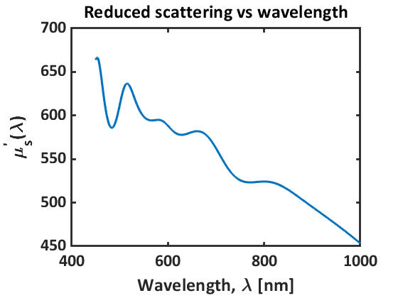 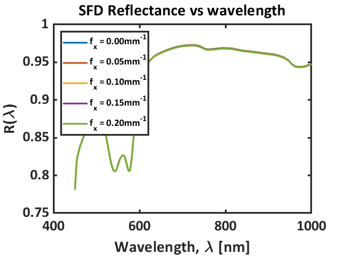Example ROfFx
Call planar reflectance with multiple sets of optical properties, varying the scattering prefactor as a function of wavelength.
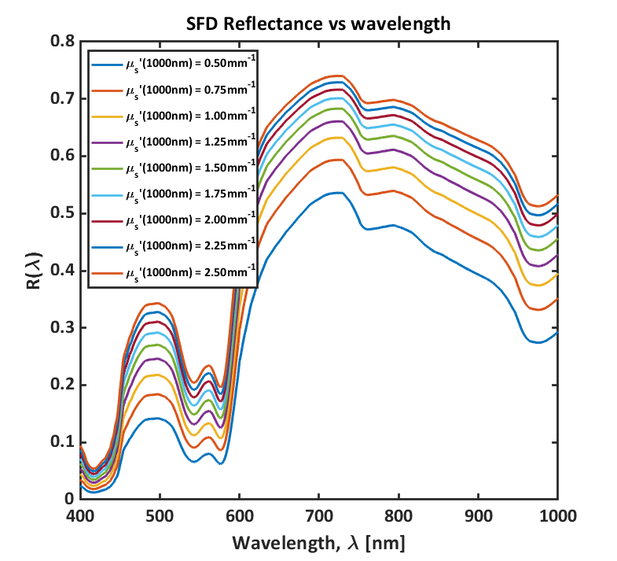Example ROfRho (multiple wavelengths, multiple rho)
Call reflectance varying the wavelength.

Example ROfRho (inverse solution for chromophore concentrations for multiple wavelengths, single rho)
____________________________________________________________ Diagnostic Information Number of variables: 3 Functions Objective: lsqcurvefit/objective Gradient: finite-differencing Number of lower bound constraints: 0 Number of upper bound constraints: 0 Algorithm selected trust-region-reflective ____________________________________________________________ End diagnostic information Local minimum found. Optimization completed because the size of the gradient is less than the value of the optimality tolerance. Meas = [70.000 30.000 0.800] IG = [70.000 30.000 0.800] Chi2=6.425e-05 Conv = [80.108 40.900 2.652] Chi2=8.310e-06 error = [0.933 0.423 0.074]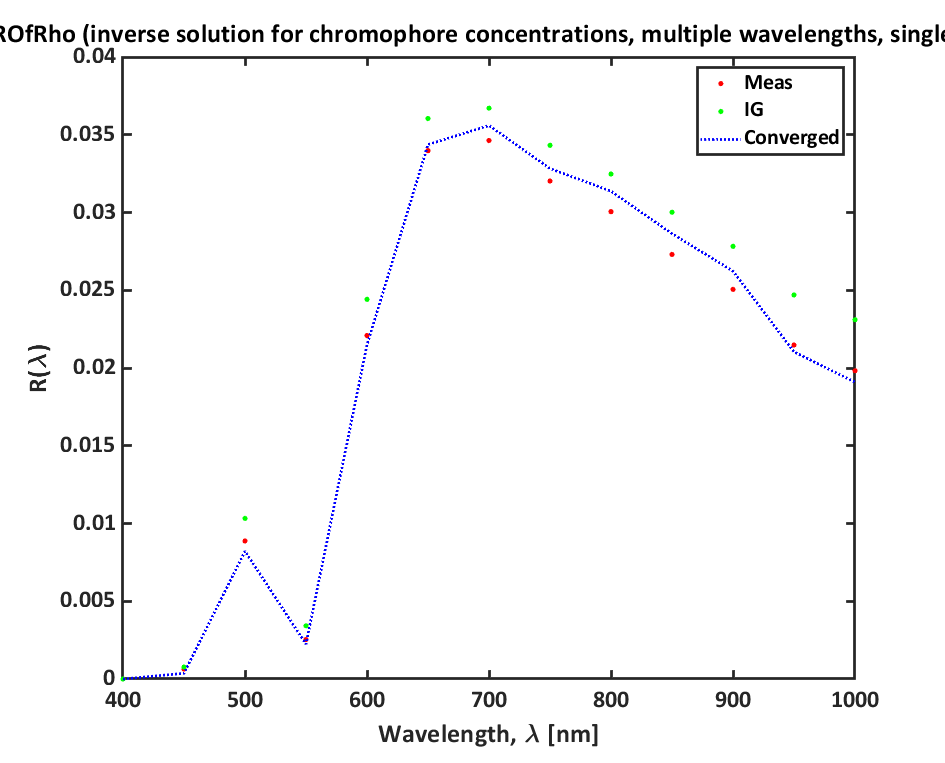
Example ROfRho for a two-layer tissue (multiple optical properties and rhos)
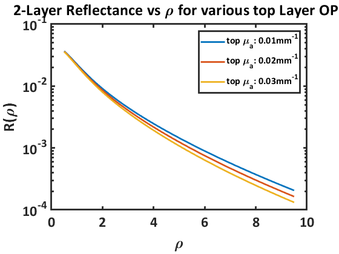Example ROfFx for a two-layer tissue (multiple optical properties and fxs)

Example ROfRhoAndTime for a two-layer tissue (multiple optical properties and times)
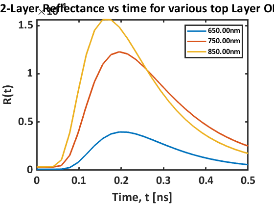Example ROfRhoAndFt for a two-layer tissue (multiple optical properties and fts)
Evaluate reflectance as a function of rho and temporal-frequency with one set of optical properites.
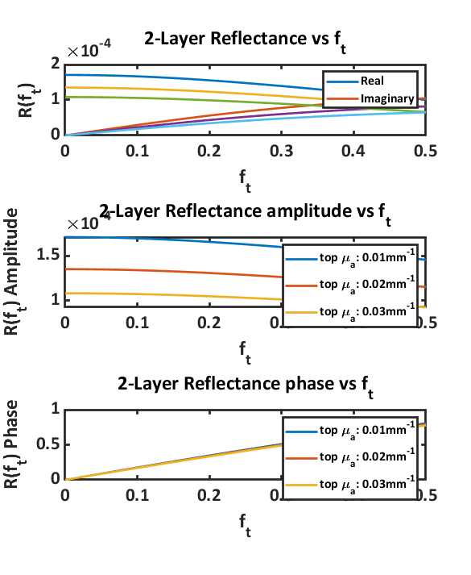